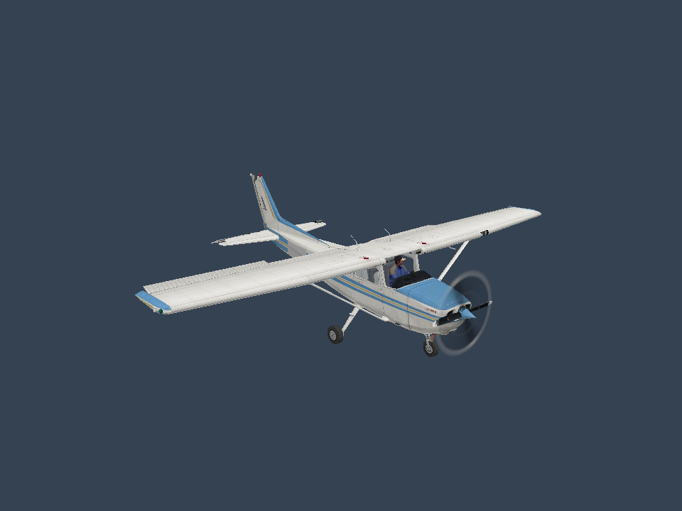
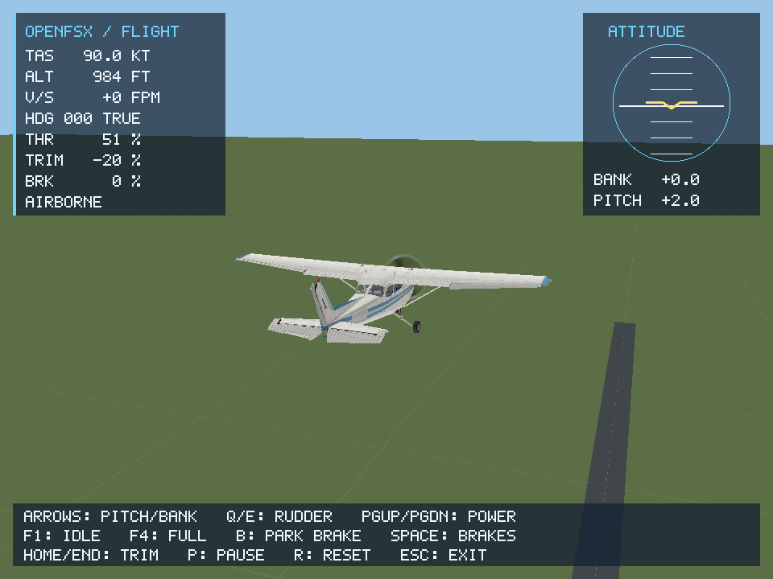
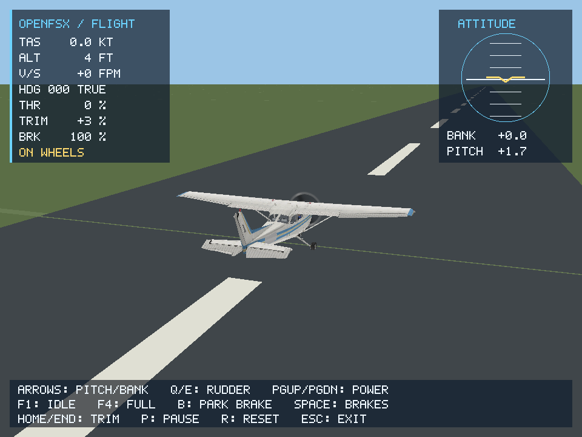

Content inspector
Read aircraft variants from aircraft.cfg. Explicit legacy encoding support and read-only access to your installation.
Run the inspector →A new beginning for Flight Simulator X.
An independent runtime, built from scratch in Rust.
A project to explore a modern engine for the world of Microsoft Flight Simulator X, inspired by openOMSI. The aim is to read existing content through an independently written runtime and verify compatibility one subsystem at a time.
Today, that means inspecting content, viewing textured models and testing keyboard-controlled C172 flight, including fixed-wheel ground roll and departure. Scenery, broader landing behavior and add-on APIs remain ahead.
Read aircraft variants from aircraft.cfg. Explicit legacy encoding support and read-only access to your installation.
Run the inspector →MDLX geometry, diffuse DDS textures, livery fallback lookup and selectable LODs, rendered through wgpu.
Explore the viewer →Keyboard controls, six-degree-of-freedom dynamics, fixed-wheel ground contact and departure from an original test runway.
Controls and evidence →Actual engine captures, 17 October 2026. C172 content from a local FSX installation, rendered independently through wgpu on an RTX 2080 / Vulkan. Select an image for the full-size capture.



Aircraft artwork belongs to its respective owners. These are engine screenshots, not redistributed aircraft models or textures. Capture details →
The first C172 livery renders with diffuse textures and an initial airborne dynamics subset. Repeatable scenarios check trim, control signs, climb response and the post-peak lift region. Recorded reference-flight comparison and full add-on compatibility remain future work.
Read the architecture and acceptance criteria →Build the research tools from source.
git clone https://github.com/openFSX-project/openFSX.git
cd openFSXReplace the path with your own FSX folder. Use Windows-1252 only for files in that code page; omit the flag for ASCII/UTF-8.
cargo run -- inspect "D:/Games/FSX" --windows-1252The native viewer requires current Vulkan or DirectX 12 drivers. This example selects the Blue/Gold C172 livery from your own installation.
cargo run --features viewer --bin openfsx-viewer -- "D:/Games/FSX/SimObjects/Airplanes/C172/model/cessna172sp.mdl" --lod 150 --texture-dir "D:/Games/FSX/SimObjects/Airplanes/C172/texture.1"Drag to orbit, scroll to zoom, use arrow keys to rotate, press R to reset and Esc to close.
Viewer controls and limitations →
This mode takes an aircraft folder and resolves its model, livery and legacy AIR data. It starts at 90 kt and 300 m above a flat test surface.
cargo run --features viewer --bin openfsx-viewer -- "D:/Games/FSX/SimObjects/Airplanes/C172" --fly --variant 0 --windows-1252 --lod 150Down/Up: pull/push · Left/Right: bank · Q/E: rudder · Page Up/Down: throttle · P: pause · R: reset. See the flight guide for trim controls, tests and limitations.
Add --ground to begin with fixed-wheel suspension settled and the parking brake applied.
cargo run --features viewer --bin openfsx-viewer -- "D:/Games/FSX/SimObjects/Airplanes/C172" --fly --ground --windows-1252 --lod 150B: toggle parking brake · F4/F1: full/idle power · Space: hold wheel brakes · Q/E: rudder and nosewheel steering. R restores the selected start. Departure is experimental; sustained control and landing performance are not validated. Read the ground subset and observed results.
cargo test --locked
cargo fmt --check
cargo build --locked --features viewer --bin openfsx-viewer
node scripts/build-site.mjs --checkTests use original synthetic data. Your FSX files remain local and must not be committed.
This documentation route does not exist.
Return to overview